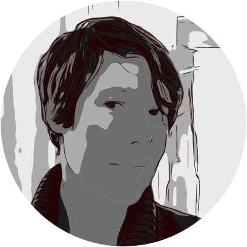

Institute of Marine Ecosystem and Fisheries Science, University of Hamburg

Institute of Marine Ecosystem and Fisheries Science, University of Hamburg
Stockholm Resilience Centre, Stockholm University
BEAM project: Size measurements and time series analysis; testing for patterns in size distribution, trends and thresholds in Baltic Sea pelagic food webs
World Wide Fund (WWF)
Wild-fishery assessments and quality control for the annual seafood guide
Institute of Marine Ecosystem and Fisheries Science, University of Hamburg
AMBER project: Spatio-temporal analyses of zooplankton communities; testing for changes in productivity regimes and relative importance of trophic controls.
German Technical Cooperation (GTZ)
Aquaculture baseline study in the province Negros Occidental, Philippines; assessment of aquaculture farms (tilapia, milkfish, shrimps) for qualification of eco-label certification.
Institute of Inland Fisheries Potsdam-Sacrow
Development of server-based relational databases and ArcGIS geodatabase; fish and water quality monitoring (Water Framework and Habitat Directives).
German Development Service (DED)
Training of local NGO, Philippines; study on heavy metal contamination in estuary and health impact assessment; coral reef monitoring and MPA establishment.
University of Hamburg, Department of Biology
Dissertation: Long-term population dynamics of key copepods under climate and food web changes: The Baltic Sea as a case study
Advisor: Christian Möllmann
Humboldt-University of Berlin, Department of Biology
Major: Zoology; Minors: Ecology, Geography
Thesis: The effects of temporal variability of disturbance on marine fouling communities at the GEOMAR, Kiel, and Leigh Marine Laboratory, University Auckland, NZ, within the framework of the international training and research program GAME
Adobe Photoshop & Illustrator, Affinity Designer, Procreate, RoughAnimator
Supervised and unsupervised learning, spatio-temporal modelling, experimental design
R, SQL, Matlab, HTML, CSS,
Git, Unix-Shell, Swift,
VBA
German
English
Swedish
French
Onboard data collection,sampling and classification of pelagic and demersal fish,micro- and macroscopic analyses,digital image analysis (ZooScan),enzyme activity measurements,underwater coral reef measurements;
PADI rescue diver license (02/2008;)
(Working Group on Common Ecosystem Reference Points)
(Working Group on Integrated Assessments of the Baltic)
Member since 2010
(Working Group on Zooplankton Ecology)
German Development Service (DED)
Mercator Foundation
A research lab project funded by the University of Hamburg
BONUS ERA-NET funded project
EU-funded Innovative Training Network program
funded by the federal state Hamburg; project coordinator
ICES Science Fund; project coordinator
funded by the Swedish Environmental Protection Agency (SEPA) and Swedish Agency for Marine and Water Management (see Swedish summary); project coordinator
Stockholm University program; postdoc
BONUS ERA-NET funded project; PhD
INDperform: R package for evaluating ecological state indicators and assessing the ecological status based on a suite of indicators.
(since 2015)
IMCC5 - International Marine Conservation Congress
June 2018
ICES Annual Science Conference, Fort Lauderdale, U.S.A.
September 2017
ICES Annual Science Conference, Riga, Latvia
September 2016
ICES/PICES 6th Zooplankton Production Symposium
May 2016
American Fisheries Society Conference
August 2015
Video presentation of seminar held during the BEAM PhD workshop "Modelling as a tool to study the Baltic Ecosystem"
March 2013, Askö laboratory; available at this Youtube link